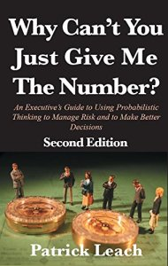

Knowledge Content Library
210
Scenario-Based Project Planning
Presented by Frank Miller (Rohm and Haas) at 2005 DAAG Conference in Philadelphia. Overview of project planning using FIATECH (Fully Integrated and Automated TECHnology for the capital facilites industry).
continue to: decisionprofessionals.com
147
Organizing the Mess: Designing Decision Solutions That Matter
Presented by Steve Mack (Whitney, Bradley & Brown) at 2004 DAAG Conference in San Francisco. Discussion of organizationally complex decisions and the use of good framing and collaboration processes to work through the mess.
continue to: decisionprofessionals.com
386
Use of a DA Process to Develop a Petroleum Upstream Fiscal and Regulatory Regime
Presented by Tony Kenck (ChevronTexaco) at 2003 DAAG Conference in Houston. This talk discusses the failed attempt to use DA framing to negotiate fiscal terms, and lessons learned.
134
Of Space Shuttles, Legal Logic, and Decisions
Presented by Tom Spradlin (Confident Choices) at 2003 DAAG Conference in Houston. Keynote address at the conference discussing the importance of focusing on decisions and logic, including illustrations where DA can be key to cleaning up ubiquitous decision mistakes.
continue to: decisionprofessionals.com
139
IT Projects are Like Other Investments
Presented by Jerry Lieberman (Decision Strategies) at 2003 DAAG Conference in Houston. This talk explores learnings from two recent IT project experiences and how IT projects can and should be evaluated like other investment decisions.
110
DA + VE Tools Do Make a Difference
Presented by Charles Jennings (BP) at 2002 DAAG Conference in Las Vegas. Discussion of processes at BP and how they add value to the organization.
continue to: decisionprofessionals.com
105
Is Price an Uncertainty or a Decision
Presented by (Eastman Kodak) at 2001 DAAG Conference in Houston. Discussion of situations where one may want to model price as an uncertainty versus a decision, including consideration of price-elasticity curves.
continue to: decisionprofessionals.com
78
Useful Scenarios in 8 Hours or Less
Presented by Garrett Brauer (Eastman Kodak) at 2000 DAAG Conference in Calgary. Discussion of how to use scenario analysis as a tool for strategy development.
continue to: decisionprofessionals.com
80
Decision Analysis to Evaluate Possible Early Allocation of Phase 3 Resources
Presented by C. Hallford (Eli Lilly) at 2000 DAAG Conference in Calgary. An analysis of the benefits and risks of accelerating the timing of allocating Phase 3 resources.
continue to: decisionprofessionals.com
86
Keep the Bath Water Too: Value Beyond the Strategy Product
Presented by Sabrina Watkins, Paul McNutt, Laine Summers (Conoco) at 2000 DAAG Conference in Calgary. Discussion of strategy development and value in E&P in Conoco.
continue to: decisionprofessionals.com
93
AT&T Consumer Long Distance Strategic Choices
Presented by Ann Skudlark (AT&T) at 2000 DAAG Conference in Calgary. Based on work by Amy Muller and Bob Kostelak. Discussion of strategy development at AT&T, including use of scenarios.
continue to: decisionprofessionals.com
72
Pipe Procurement Project
Presented by Phil Kormann (TransCanada Pipelines) at 1999 DAAG Conference in Orlando. Case study of pipe procurement problem illustrating framing of the issue, the process, and key results.
continue to: decisionprofessionals.com
74
Six Hats Application to Framing
Presented by (Conoco) at 1999 DAAG Conference in Orlando. Case study where Edward DeBono's Six Hats Theory was used to guide framing of a decision where agreement and clarity were lacking.
continue to: decisionprofessionals.com
76
Nested Strategy Tables
Presented by F. Rolle (DuPont) at 1999 DAAG Conference in Orlando. Illustrates the use of nested Strategy Tables for developing alternatives for complex strategies.
continue to: decisionprofessionals.com
56
Analysis of Where to Hold DAAG
Presented by John Palmer (General Motors) at 1998 DAAG Conference in San Francisco. An analysis of where and when the Decision Analysis Affinity Group (DAAG) meeting should be held after the April 1998 SF meeting.
continue to: decisionprofessionals.com
158
Handbook of Decision Analysis

by Gregory S. Parnell, Terry A. Bresnick, Steven N. Tani, Eric R. Johnson (SDP Fellows)
Fills a gap in decision analysis literature, featuring both soft personal/interpersonal skills and the hard technical skills involving mathematics and modeling.
Fills a gap in decision analysis literature, featuring both soft personal/interpersonal skills and the hard technical skills involving mathematics and modeling.
continue to: amazon.com
58
Value Focused Thinking

by Ralph Keeney (SDP Fellow)
A classic in the field of Decision Analysis, and for anyone seeking to make better decisions.
A classic in the field of Decision Analysis, and for anyone seeking to make better decisions.
continue to: amazon.com
152
Decision Analysis for the Professional
by John Celona and Peter McNamee (SDP Fellows)
You can purchase on Amazon or download a free copy of this book in PDF format by clicking below.
You can purchase on Amazon or download a free copy of this book in PDF format by clicking below.
continue to: smartorg.com
153
Why Can't You Just Give Me the Number?

by Patrick Leach (SDP Fellow)
Updated 2nd edition. An executive's guide to using probabilistic thinking to manage risk and to make better decisions.
Updated 2nd edition. An executive's guide to using probabilistic thinking to manage risk and to make better decisions.
continue to: amazon.com
154
Making Hard Decisions

by Robert T. Clemen (SDP Fellow) and Terence Reilly
Updated 3rd edition, with software and tutorials in Palisade's DecisionTools Suite.
Updated 3rd edition, with software and tutorials in Palisade's DecisionTools Suite.
continue to: cengagebrain.com